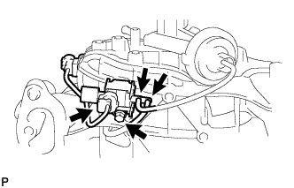
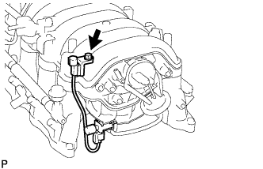

VACUUM SWITCHING VALVE (for ACIS) > INSTALLATION |
| 1. INSTALL VACUUM SWITCHING VALVE ASSEMBLY (for ACIS) |
 |
Install the VSV with the bolt.
Connect the VSV connector and 2 vacuum hoses.
 |
Connect the VSV connector with the bolt.
| 2. INSTALL INTAKE MANIFOLD |
Install the intake manifold (Click here).